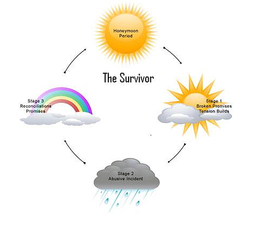

Cycles and Tactics in Violent Relationships
Relationship violence is not a moment, but a pattern of behavior which occurs over time, during which one partner intentionally acts to maintain power and control over their current or former partner. Relationship violence is defined by a person's fear of their partner, and a gradual escalation of power, control and violence. Abuse can but does not necessarily include physical abuse. Often, types of abuse overlap and are coupled with isolation from friends and family. The abusive tactic of isolation or coercing a partner to end their friendships can be especially devastating, as it can make the process of trying to leave an abusive relationship incredibly difficult. Survivors can become trapped in a relationship for a large variety of reasons, including but not limited to: shame, fear, stigma, loving one's partner, not having a network of support and/or not knowing resources and options.

The vast majority of relationships start off in what we call the honeymoon period. No one enters a relationship looking for abuse (in any of the ways this can look and feel). A quick exercise - take out a piece of paper and write the word "relationship" on the top and spend one minute writing down every term that comes to mind. Flip it over and write "violence" on the top of the page and write every word that comes to mind. You'll see that we don't tie together violence and relationships on instinct, and we don't begin our relationships in this frame of mind, either. It is crucial to remember the honeymoon phase as this is what we will remember, rely on, and return to if things get toxic down the road.
Tension Building is the period in which warning signs of violence or abuse start to come to light. These red flags include but are not limited to: one partner convincing the other to stop spending time with their friends or participating in activities they care about, threats of any nature, strong beliefs in gender stereotypes/sex roles (i.e. "all men act like..." "all women feel like..."), saying "I love you" very early on in a relationship, extreme jealousy and a gut feeling that things aren't right. Warning signs generally link to issues of control and different tactics to gain or maintain power in the relationship.
In abusive relationships, red flags and tension can lead to an abusive incident - a situation that makes one partner feel unsafe. This can be a verbal fight or argument, a physical lashing-out, or sexual conduct that crosses the line.
Reconciliation Phase: The cycle continues when the abusive partner apologizes, uses "I love you" as an excuse and places the blame on anyone but themselves. Examples include: "If you only wouldn't... If you just would... From now on I will..." This places both partners back into the honeymoon phase, however briefly. Once a pattern of tension building has been established with the use of isolation, monitoring and emotional abuse, the cycle of violence escalates. In an escalated violent relationship abusive incidents typically become more frequent and intense.
Together we can build a safer campus
Learn More
Cycles and Tactics in Violent Relationships
Red Flags and Warning Signs
Safety Planning
Common Reactions
Taking Care of Yourself
Reporting Options
Concerns Related to Identity